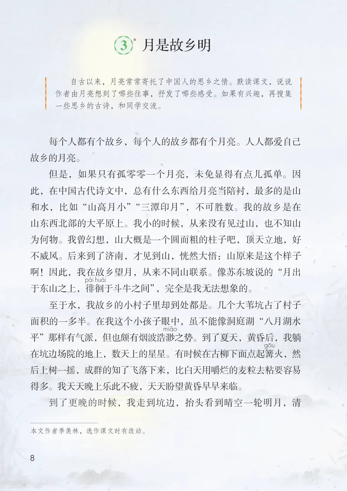
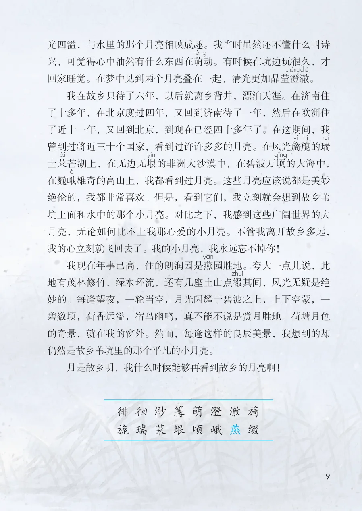

展开章节菜单
3 月是故乡明
*
每个人都有个故乡，每个人的故乡都有个月亮。人人都爱自己故乡的月亮。
但是，如果只有孤零零一个月亮，未免显得有点儿孤单。因此，在中国古代诗文中，总有什么东西给月亮当陪衬，最多的是山和水，比如“山高月小”“三潭印月”，不可胜数。我的故乡是在山东西北部的大平原上。我小的时候，从来没有见过山，也不知山为何物。我曾幻想，山大概是一个圆而粗的柱子吧，顶天立地，好不威风。后来到了济南，才见到山，恍然大悟：山原来是这个样子啊！因此，我在故乡望月，从来不同山联系。像苏东坡说的“月出于东山之上，徘
于斗牛之间”，完全是我无法想象的。
至于水，我故乡的小村子里却到处都是。几个大苇坑占了村子面积的一多半。在我这个小孩子眼中，虽不能像洞庭湖“八月湖水平”那样有气派，但也颇有烟波浩渺
之势。到了夏天，黄昏后，我躺在坑边场院的地上，数天上的星星。有时候在古柳下面点起篝
火，然后上树一摇，成群的知了飞落下来，比白天用嚼烂的麦粒去粘要容易得多。我天天晚上乐此不疲，天天盼望黄昏早早来临。
到了更晚的时候，我走到坑边，抬头看到晴空一轮明月，清
查看教材原页（保留全部图片、注音与原始排版）

光四溢，与水里的那个月亮相映成趣。我当时虽然还不懂什么叫诗
兴，可觉得心中油然有什么东西在萌
动。有时候在坑边玩很久，才
回家睡觉。在梦中见到两个月亮叠在一起，清光更加晶莹澄
澈
。
我在故乡只待了六年，以后就离乡背井，漂泊天涯。在济南住
了十多年，在北京度过四年，又回到济南待了一年，然后在欧洲住
了近十一年，又回到北京，到现在已经四十多年了。在这期间，我
曾到过将近三十个国家，看到过许许多多的月亮。在风光旖
旎
的瑞
士莱
芒湖上，在无边无垠
的非洲大沙漠中，在碧波万顷
的大海中，
在巍峨
雄奇的高山上，我都看到过月亮。这些月亮应该说都是美妙
绝伦的，我都非常喜欢。但是，看到它们，我立刻就会想到故乡苇
坑上面和水中的那个小月亮。对比之下，我感到这些广阔世界的大
月亮，无论如何比不上我那心爱的小月亮。不管我离开故乡多远，
我的心立刻就飞回去了。我的小月亮，我永远忘不掉你！
我现在年事已高，住的朗润园是燕
园胜地。夸大一点儿说，此
地有茂林修竹，绿水环流，还有几座土山点缀
其间，风光无疑是绝
妙的。每逢望夜，一轮当空，月光闪耀于碧波之上，上下空蒙，一
碧数顷，荷香远溢，宿鸟幽鸣，真不能不说是赏月胜地。荷塘月色
的奇景，就在我的窗外。然而，每逢这样的良辰美景，我想到的却
仍然是故乡苇坑里的那个平凡的小月亮。
月是故乡明，我什么时候能够再看到故乡的月亮啊！
查看教材原页（保留全部图片、注音与原始排版）
